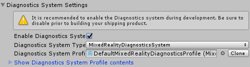
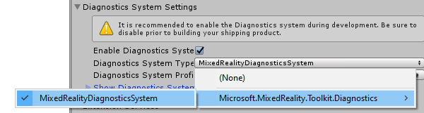
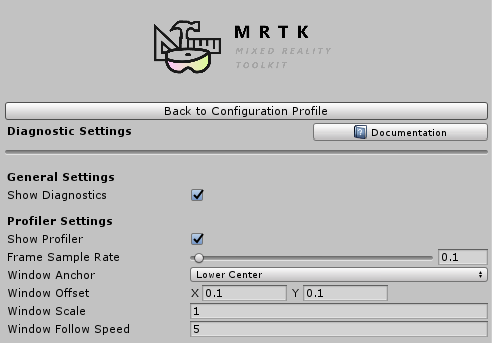

Diagnostic System (诊断系统)
混合现实工具包诊断系统（Mixed Reality Toolkit Diagnostic System）提供了在应用程序中运行的诊断工具，以能够分析应用程序问题。
诊断系统的第一版包含可视分析器 以便在使用应用程序时分析性能问题。
入门
[!重要] 强烈建议在整个产品开发周期中启用诊断系统，并在构建和发布最终版本之前将其禁用作为最后更改。
要开始使用诊断系统，有两个关键步骤。
启用诊断系统
诊断系统由MixedRealityToolkit对象（或其他 服务注册者 组件）管理。
以下步骤假定使用MixedRealityToolkit对象。其他服务注册者所需的步骤可能有所不同。
在场景层次中选择MixedRealityToolkit对象。

将“Inspector”面板导航到“Diagnostics

选择Diagnostics System

[!注意] 默认配置文件的用户DefaultMixedRealityToolkitConfigurationProfile,将诊断系统预先配置为使用
MixedRealityDiagnosticsSystem对象.
配置诊断选项
诊断系统使用配置文件来指定要显示的组件并配置它们的设置。请参见配置诊断系统 查看与可用组件设置有关的更多信息。

[!重要] 尽管可以在开发应用程序时使用Unity的Play模式而不需要构建和部署步骤，但重要的是使用在目标硬件和平台上运行的编译应用程序来评估诊断系统的结果。
性能诊断，例如可视分析器从编辑器中运行时，可能无法准确反映实际的应用程序性能。